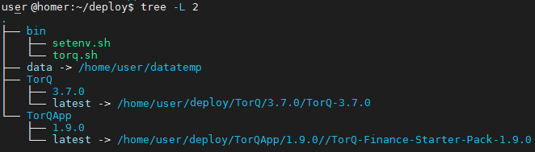

Install Guide
Usage instruction for a fresh TorQ Install
In your Linux terminal run the following line:
wget https://raw.githubusercontent.com/DataIntellectTech/TorQ/master/installtorqapp.sh
For the two lines of code below, replace the <...> sections with the name of the latest TorQ/TorQ Finance Starter Pack versions, respectfully. These can be found here:
https://github.com/DataIntellectTech/TorQ/releases/latest
https://github.com/DataIntellectTech/TorQ-Finance-Starter-Pack/releases/latest
wget --content-disposition https://github.com/DataIntellectTech/TorQ/archive/<TorQ latest version>.tar.gz
wget --content-disposition https://github.com/DataIntellectTech/TorQ-Finance-Starter-Pack/archive/<TorQ Finance Starter Pack latest version>.tar.gz
Following the substitution, your specified .tar.gz file names should match the .tar.gz file names found through each respectful link above.
Once you have substituted in the names of the latest release files, run each line of code in your Linux terminal, one by one.
Then to launch the script, substitute in the respective file names for the <...> sections, as above, and run:
bash installtorqapp.sh --torq <TorQ latest version>.tar.gz --releasedir deploy --data datatemp --installfile <TorQ Finance Starter Pack latest version>.tar.gz --env
Where data parameter and env parameter are optional parameters. Full usage of the parameters available in the table below.
The folder structure after installation will look like this:
(TorQ-3.7.0 used as an example throughout, your TorQ version number should match the latest release)

Then to run the TorQ stack:
./deploy/bin/torq.sh start all
Check if the stack is up
./deploy/bin/torq.sh summary
Parameters used
| Command line parameter | Explanation and Usage |
|---|---|
| torq | Is a mandatory parameter that is the full path or relative path to the TorQ installation. It can either be a TorQ Directory where the version is already unzipped, that can be used when multiple TorQ Applications are used on the server for example and all point to a single TorQ main code. This will create a softlink to the relevant TorQ code. Or it can be a .tar.gz file of the TorQ installation for a fresh install. Example usage in the script: --torq /home/user/TorQ/TorQ-3.7.0 Where TorQ-3.7.0 is unzipped directory from the latest release .tar.gz file. Or --torq /home/user/TorQ/TorQ-3.7.0.tar.gz Which is the .tar.gz file from GitHub using: wget --content-disposition https://github.com/DataIntellectTech/TorQ/archive/3.7.0.tar.gz |
| releasedir | Is a mandatory parameter that is the full path or relative path to the deployment directory that will populate the TorQ and TorQApp. If the directory doesn't exist then script creates one. It can be anything, if following the previously released instructions the folder name would be deploy. The releasedir parameter can be used as follows: --releasedir /home/user/deploy |
| installfile | Is a mandatory parameter with the full path or relative path to the TorQApp installation file (ACCEPTS ONLY .tar.gz FILE). Can be used as follows: --installfile /home/user/TorQ-FSP/TorQ-Finance-Starter-Pack-master.tar.gz |
| data | An optional parameter. That is if you want to have your data directory as defined by TORQDATAHOME live in a different part of the system rather than the place where the code lives. Can be used as follows: --data /home/data/torq_data If the directory doesn't exist the script will make one. Also accepts a relative path if necessary. |
| env | Env is the environment-specific optional installation parameters. That is a separate .sh script that can be configured for different environments like DEV/UAT/PROD. In the script, there are SED replacements for necessary variables. If this parameter is left empty or isn't included nothing happens. If you want to include it you have to insert the parameters as follows (also accepts relative path): --env /home/user/env_spec_dev.sh --env /env_spec_dev.sh Below is a user guide on how to set up the .sh script to have necessary replacements by the env parameter. For env parameter the env_spec script should look like this: echo $1 find $1 -type f -name "*.sh" find $1 -type f -name "*.sh" -exec sed -i "s/export KDBBASEPORT=.*/export KDBBASEPORT=7373/g" {} \; Create an sh script env_spec_dev.sh and then add the parameter to the install script start line. --env /home/user/env_spec_dev.sh This will change the KDBBASEPORT to a new value. Similar actions can be done with other variables, and required user basic knowledge of sed commands. The script will scan through the code in the TorQApp directory and the bin directory from the deploy folder. If DEV and UAT run on different data sources then using env variable the install script can replace them with the correct server address. This is essentially the environment-specific config file. |
Version control
The installtion script currently works with:
-
TorQ v3.7.0 or higher
-
TorQ-FSP v1.9.0 and higher
-
TorQ-Crypto v1.0.0 and higher
-
TorQ-TAQ v1.0.0 and higher